Titanic: Machine Learning from Disaster - 2021 Update: Streamlit
Fri, Jul 19, 2019
25-minute read
This blogpost contains code for the Kaggle Titanic challenge. It is a well-known beginner challenge and its goal is to build a binary classification model to predict if passengers would have survived the Titanic disaster or not. The focus of this blogpost is on Exploratory Data Analysis and some Feature Engineering. As usual, the code can also be found in my correspondig GitHub repository.
We start off by importing the basic Python libraries that will be needed throughout this notebook and by loading the datasets into pandas DataFrames.
import pandas as pd
import numpy as np
import matplotlib.pyplot as plt
import seaborn as sns
%matplotlib inline
import warnings
warnings.filterwarnings('ignore')
train = pd.read_csv("train.csv")
test = pd.read_csv("test.csv")
1. Exploratory Data Analysis (EDA)
The first step when tackling a new challenge or project should always be to first get to know the data. Therefore, we will start by looking at the data and the variables.
train.shape, test.shape
((891, 12), (418, 11))
We see that the training set contains 891 observations (rows) and 12 variables or features (columns). The test set contains less observations (418) and only 11 features.
train.columns, test.columns
(Index(['PassengerId', 'Survived', 'Pclass', 'Name', 'Sex', 'Age', 'SibSp',
'Parch', 'Ticket', 'Fare', 'Cabin', 'Embarked'],
dtype='object'),
Index(['PassengerId', 'Pclass', 'Name', 'Sex', 'Age', 'SibSp', 'Parch',
'Ticket', 'Fare', 'Cabin', 'Embarked'],
dtype='object'))
Moreover, both datasets contain exactly the same variables except for “Survived”, which is missing in the test dataset since this is the variable we want to predict. It is a dummy variable, 1 means survived, 0 means not survived. The “Name” variable has unique values for every person and does not directly predict the chance of survival. However, we will not drop the feature at this point, but are going to extract some information from it in the section “Feature Engineering”.
As a next step we can look at the data types of the variables.
train.info()
<class 'pandas.core.frame.DataFrame'>
RangeIndex: 891 entries, 0 to 890
Data columns (total 12 columns):
PassengerId 891 non-null int64
Survived 891 non-null int64
Pclass 891 non-null int64
Name 891 non-null object
Sex 891 non-null object
Age 714 non-null float64
SibSp 891 non-null int64
Parch 891 non-null int64
Ticket 891 non-null object
Fare 891 non-null float64
Cabin 204 non-null object
Embarked 889 non-null object
dtypes: float64(2), int64(5), object(5)
memory usage: 83.6+ KB
The variables “Sex”, “Ticket”, “Cabin” and “Embarked” are categorical data, the remaining features are numerical. We will first look at the numerical variables in more detail and then at the categorical variables.
In order to see which variables have an influence on the chance of survival, we will also investigate the relation between each variable and the target variable “Survived”.
1.1 Numerical Features
Survived
We start with the target variable, indicating if a passenger has survived the sinking of the Titanic.
np.mean(train.Survived), sns.countplot(data=train, x="Survived")
(0.3838)
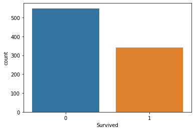
Around 38,3% of the passengers survived the Titanic.
Pclass
train.Pclass.value_counts()
3 491
1 216
2 184
Name: Pclass, dtype: int64
Pclass is short for Passenger Class and gives the class to which the passengers belong. 1 is the most expensive class, 3 the cheapest one. As expected, most passengers belong to class 3, while class 1 contains the least passengers.
sns.countplot(data=train, x="Pclass", hue="Survived")
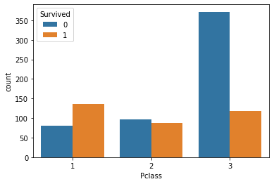
for i in [1,2,3]:
print(round(np.mean(train.Survived[train["Pclass"]==i]), 4))
0.6296
0.4728
0.2424
The fraction of passengers, who survived is 63.0% for the first class, 47.3% for the second class and only 24.2% for the third class. The fraction of people surviving is therefore larger than the overall fraction surviving the catastrophe for the first and second class and way below the mean for the third class. We can already see here that the cabin class does play a very important role in surviving and that in the first class almost 2 out of 3 passengers survived.
Age
Since age is a continuous variable, we can display its distribution using a histogram and a kernel density estimator.
sns.distplot(train["Age"])
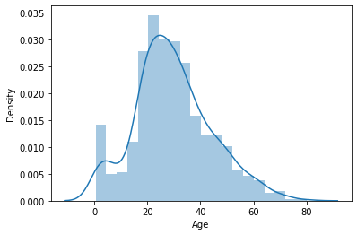
Running the above code yields an error since there are missing values for Age in the training dataset. Therefore, we first have to fix this issue.
train.Age.isnull().sum()
177
agemean1, agemean2, agemean3 = train["Age"].groupby([train["Pclass"]]).mean()
round(agemean1,2), round(agemean2,2), round(agemean3,2)
(38.23, 29.88, 25.14)
There are 177 missing values for the Age. We compute the mean in each class and will use these means to impute the missing values in the training dataset.
miss_age = np.isnan(train["Age"])
class_1 = train["Pclass"] == 1
class_2 = train["Pclass"] == 2
class_3 = train["Pclass"] == 3
train.loc[class_1, "Age"] = train.loc[class_1, "Age"].fillna(agemean1)
train.loc[class_2, "Age"] = train.loc[class_2, "Age"].fillna(agemean2)
train.loc[class_3, "Age"] = train.loc[class_3, "Age"].fillna(agemean3)
train.Age.isnull().sum()
0
test.Age.isnull().sum()
86
We see that there are also missing values for age in the test data set, therefore we do the same thing for the test dataset.
agemean_1_test, agemean_2_test, agemean_3_test = test["Age"].groupby([test["Pclass"]]).mean()
round(agemean_1_test, 2), round(agemean_2_test, 2), round(agemean_3_test, 2)
(40.92, 28.78, 24.03)
miss_age_test = np.isnan(test["Age"])
class_1_test = test["Pclass"] == 1
class_2_test = test["Pclass"] == 2
class_3_test = test["Pclass"] == 3
test.loc[class_1_test, "Age"] = test.loc[class_1_test, "Age"].fillna(agemean_1_test)
test.loc[class_2_test, "Age"] = test.loc[class_2_test, "Age"].fillna(agemean_2_test)
test.loc[class_3_test, "Age"] = test.loc[class_3_test, "Age"].fillna(agemean_3_test)
test.Age.isnull().sum()
0
Now we can again run the above code and plot the histogram.
sns.distplot(train["Age"])
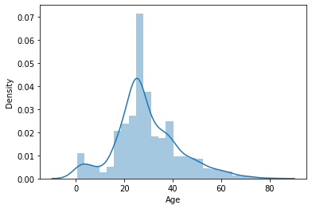
We can also plot the distribution of age by survival.
grid = sns.FacetGrid(data=train, col="Survived")
grid.map(sns.distplot, "Age")
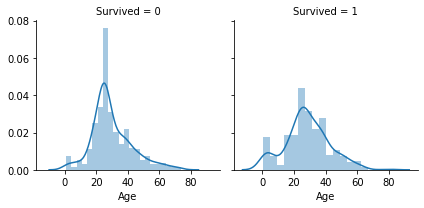
SibSp
train.SibSp.value_counts()
0 608
1 209
2 28
4 18
3 16
8 7
5 5
Name: SibSp, dtype: int64
The variable SibSp contains information about the passenger having Siblings or Spouses aboard the Titanic. Most people seem to be alone, or at least without any siblings or spouse. A large number of passengers does have 1 sibling or his/her spouse with them, those are probably mostly married couples. There also seem to be a few families.
Parch
train.Parch.value_counts()
0 678
1 118
2 80
3 5
5 5
4 4
6 1
Name: Parch, dtype: int64
Similar to the variable before, “Parch” states the number of the passenger’s parents or children aboard the ship. It also indicates that most passengers are alone, however, there seem to be a few families.
Fare
First, we take a look at the mean fares in the respective classes.
for i in [1,2,3]:
print(round(np.mean(train.Fare[train["Pclass"] == i]), 2))
84.15
20.66
13.68
As expected, there is a drastic decline in the fare from the first to the third class. Let’s see next if there is a systematic difference between the fare of male and female passengers.
for i in [1,2,3]:
print("The Fare for female passengers in Class " + str(i) + " is: " + str(round(np.mean(train["Fare"].loc[(train["Pclass"] == i) & (train["Sex"] == "female")]), 2))),
print("The Fare for male passengers in Class " + str(i) + " is: " + str(round(np.mean(train["Fare"].loc[(train["Pclass"] == i) & (train["Sex"] == "male")]), 2)))
print("\n")
The Fare for female passengers in Class 1 is: 106.13
The Fare for male passengers in Class 1 is: 67.23
The Fare for female passengers in Class 2 is: 21.97
The Fare for male passengers in Class 2 is: 19.74
The Fare for female passengers in Class 3 is: 16.12
The Fare for male passengers in Class 3 is: 12.66
The fare seems to be higher for female passengers than for male passengers, this is also consistent over all classes.
for harb in ["C", "S", "Q"]:
print("Mean fare for passengers embarked in " + str(harb) + ": " + str(round(np.mean(train.Fare[train["Embarked"] == harb]), 2)))
Mean fare for passengers embarked in C: 59.95
Mean fare for passengers embarked in S: 27.08
Mean fare for passengers embarked in Q: 13.28
Furthermore, the mean fare is the highest for people from Cherbourg and the lowest from passengers from Queenstown. An explanation for this is given further below (section Categorical Features - Embarked).
for harb in ["C", "S", "Q"]:
print("Mean fare for 1st class passengers embarked in " + str(harb) + ": " + str(round(np.mean(train["Fare"].loc[(train["Embarked"] == harb) & (train["Pclass"] == 1)]), 2)))
print("Mean fare for 2nd class passengers embarked in " + str(harb) + ": " + str(round(np.mean(train["Fare"].loc[(train["Embarked"] == harb) & (train["Pclass"] == 2)]), 2)))
print("Mean fare for 3rd class passengers embarked in " + str(harb) + ": " + str(round(np.mean(train["Fare"].loc[(train["Embarked"] == harb) & (train["Pclass"] == 3)]), 2)))
print("\n")
Mean fare for 1st class passengers embarked in C: 104.72
Mean fare for 2nd class passengers embarked in C: 25.36
Mean fare for 3rd class passengers embarked in C: 11.21
Mean fare for 1st class passengers embarked in S: 70.36
Mean fare for 2nd class passengers embarked in S: 20.33
Mean fare for 3rd class passengers embarked in S: 14.64
Mean fare for 1st class passengers embarked in Q: 90.0
Mean fare for 2nd class passengers embarked in Q: 12.35
Mean fare for 3rd class passengers embarked in Q: 11.18
We can see that in addition to the different prices in the respective classes there was some price differentiation between the different harbours with Cherbourg being the most expensive one.
Comments on the relationship of fares and the chance of urvival are made in the next section.
Correlation between variables
corr_mat = train.drop("PassengerId", axis=1).corr()
sns.heatmap(corr_mat, annot=True)
fig = plt.gcf()
fig.set_size_inches(10,8)
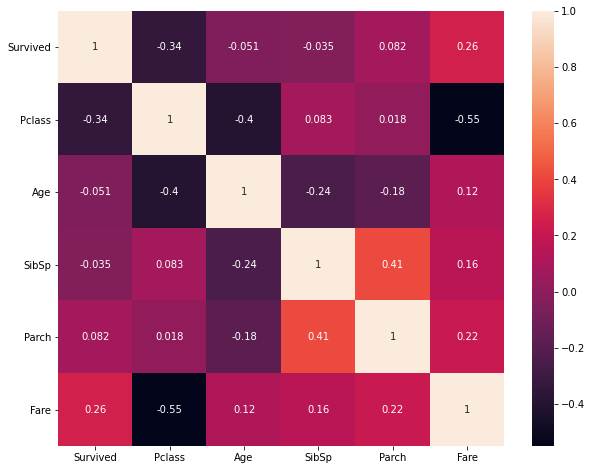
The above heatmap shows the correlation between all numerical variables including our target variable “Survived”. A correlation of 1 means a very strong linear relationship, a correlation coefficient of -1 means a very strong negative linear relationship between variables. A correlation of 0 means that the variables do not have a linear relationship at all.
We can learn from the heatmap that there is a pretty strong negative correlation of -0.55 between the class and the fare, which makes sense since tickets for the first and second class are more expensive than for the third class. Furthermore, there seems to be a negative relationship between the class and the chance of survival indicated by the correlation coefficient of -0.34. We have also seen this in the barplots created above. The correlation between the Fare and Survived is pretty strong as well (0.26), which probably stems from the fact that higher fares coincide with a lower (i.e. “better”) class. The high correlation between SibSp and Parch of 0.41 lets us assume that there may be some families aboard.
If there is a very high correlation between some variables, these do not contain much new explanatory information in addition to the correlated feature. This can cause the respective estimator to be less precise and is known as multicollinearity. The easiest solution would be to drop one of the features or combining them in some way if possible. Another approach would be to use dimensionality reduction techniques, as for example a principal component analysis (PCA) step to reduce the effective number of features. Since the highest correlation (in absolute values) is -0.55, multicollinearity is not a problem for our data and thus we keep all of the features.
1.2 Categorical Features
Sex
train.Sex.value_counts(), sns.countplot(data=train, x="Sex", hue="Survived")
(male 577
female 314
Name: Sex, dtype: int64,
<AxesSubplot:xlabel='Sex', ylabel='count'>)
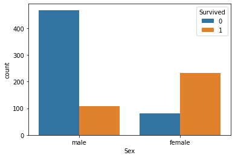
print(round(np.mean(train.Survived[train["Sex"]=="male"]), 4))
print(round(np.mean(train.Survived[train["Sex"]=="female"]), 4))
0.1889
0.742
We can see that the number of females that survived is a lot higher than the number of males surviving although there are much more men on the Titanic than women (577 vs. 314). This is also reflected in the fraction of men and women who survived. While only 18.9% of the male passengers survived, over 74% of the female passengers survived the sinking.
Let’s take a look if this pattern is consistent through all classes.
sns.barplot(data=train, x='Pclass', y='Survived', hue='Sex')
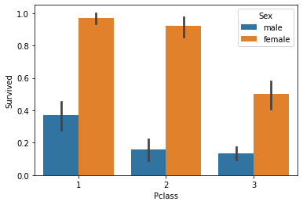
We have qualitatively the same picture for each class, although the survival rates are higher in the more expensive classes in general.
Cabin
train.Cabin.value_counts()
C23 C25 C27 4
G6 4
B96 B98 4
F33 3
F2 3
..
F E69 1
C45 1
E38 1
C110 1
B69 1
Name: Cabin, Length: 147, dtype: int64
train.Cabin.isnull().sum()
687
Since there are mostly unique values and 687 missing values we will just drop the column completely.
train = train.drop("Cabin", axis=1)
test = test.drop("Cabin", axis=1)
Ticket
train["Ticket"].value_counts
<bound method IndexOpsMixin.value_counts of 0 A/5 21171
1 PC 17599
2 STON/O2. 3101282
3 113803
4 373450
...
886 211536
887 112053
888 W./C. 6607
889 111369
890 370376
Name: Ticket, Length: 891, dtype: object>
The “Ticket” feature contains the ticket number. These are mainly unique values, therefore not adding much explanatory power to our prediction model. Thus, we just drop this column as well.
train = train.drop("Ticket", axis=1)
test = test.drop("Ticket", axis=1)
Embarked
train.Embarked.value_counts()
S 644
C 168
Q 77
Name: Embarked, dtype: int64
The categories of embarkment are C, Q and S which are the first letters of Cherbourg, Queenstown and Southampton. Most passengers are embarked in Southampton, the least frequent category is Queenstown.
sns.barplot(data=train, x="Embarked", y="Survived", hue="Sex")
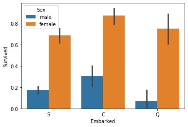
Interestingly, the fraction of people who survived is higher for Cherbourg. The fraction of male survivors is much higher in Southampton compared to Queenstown, while the fraction of female survivors is higher for Queenstown compared to Southampton. The high survival rates for Cherbourg might be high due to the fact that first class passengers are mostly embarked in Cherbourg, so we will further investigate that now.
grid = sns.FacetGrid(data=train, col="Embarked")
grid.map(sns.countplot, "Pclass")
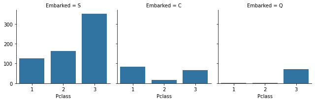
Cherbourg is the only category for which the number of first-class passengers is the highest, which confirms the assumption from above. At the same time, mainly passengers from the third class are embarked in Queenstown which explains the low survival rates for male passengers.
2. Data Preparation & Feature Engineering
2.1 Feature Engineering
X = train.drop("Survived", axis=1)
y = train["Survived"]
X["train"] = 1
test["train"] = 0
data = pd.concat([X, test])
X.shape, test.shape, data.shape
((891, 10), (418, 10), (1309, 10))
Age Band
Since age is a continuous variable, we convert it into a categorical variable consisting of age bands in contrast to the age itself.
data.Age.describe()
count 1309.000000
mean 29.329730
std 13.127747
min 0.170000
25% 22.000000
50% 26.000000
75% 37.000000
max 80.000000
Name: Age, dtype: float64
The lowest value for Age in our datasets is 0.17 years, the oldest passenger is 80 years old. We want to convert the age into 5 categories. In order to get balanced groups, we will orientate our splitting at percentiles.
data.Age.quantile([0.2, 0.4, 0.6, 0.8])
0.2 21.00000
0.4 25.14062
0.6 29.87763
0.8 39.00000
Name: Age, dtype: float64
data["age_cat"] = str(1)
data.loc[data["Age"] <= 21, "age_cat"] = str(1)
data.loc[(data["Age"] > 20) & (data["Age"] <= 25), "age_cat"] = str(2)
data.loc[(data["Age"] > 25) & (data["Age"] <= 30), "age_cat"] = str(3)
data.loc[(data["Age"] > 30) & (data["Age"] <= 40), "age_cat"] = str(4)
data.loc[data["Age"] > 40, "age_cat"] = str(5)
data.age_cat.value_counts()
3 318
2 267
1 248
4 240
5 236
Name: age_cat, dtype: int64
Child
In addition to the age category we just defined, we assume that being a child increases the probability of surviving. Since our youngest age category ranges from newborn to 20-year-olds, this is not really reflected by the data yet. We therefore define a dummy variable indicating if a passenger is a child. We do so by saying that children are people younger than 16.
data["child"] = 0
data.loc[data["Age"] <= 16, "child"] = 1
Since there is a very high positive correlation between Age and the categorical age variable (which is not surprising since it contains mostly the same information just structured), we are going to drop the continuous age variable.
data = data.drop("Age", axis=1)
Fare bands
In the same way as with age we can proceed with the fares paid by each passenger. Here, we will not define bands by hand, but we use the pandas function qcut(). We use 10 categories to divide the fares into. After doing so, we can drop the original fare column. However, before we can create the bands, we check for missing values.
data[data["Fare"].isnull()]
| PassengerId | Pclass | Name | Sex | SibSp | Parch | Fare | Embarked | train | age_cat | child | |
|---|---|---|---|---|---|---|---|---|---|---|---|
| 152 | 1044 | 3 | Storey, Mr. Thomas | male | 0 | 0 | NaN | S | 0 | 5 | 0 |
The observation missing the fare data belongs to the third class and was embarked in are embarked . We will therefore impute the missing with the mean fare of passengers from the third class embarked in are embarked . Since we have seen before that the fares are systematically lower for male passengers, we also take into account that the passenger with the missing fare value is male.
data.loc[data["Fare"].isnull(), "Fare"] = np.mean(data["Fare"].loc[(data["Pclass"] == 3) & (data["Embarked"] == "S") & (data["Sex"] == "male")])
Now we can continue creating the fare categories based on quantiles.
data["Fare_cat"] = pd.qcut(data["Fare"], 10)
data = data.drop("Fare", axis=1)
Family Size SibSp + ParCh
Since we have information about the number of siblings and spouses and about the number of parents or children for each passenger, we can use these features to create a feature that contains the number of a particular family that was aboard the ship. We call it family_size.
data["family_size"] = data["SibSp"] + data["Parch"] + 1
data.family_size.value_counts()
1 790
2 235
3 159
4 43
6 25
5 22
7 16
11 11
8 8
Name: family_size, dtype: int64
We can now drop the features SibSp and Parch.
data = data.drop(["SibSp", "Parch"], axis=1)
Title
data.Name.head(10)
0 Braund, Mr. Owen Harris
1 Cumings, Mrs. John Bradley (Florence Briggs Th...
2 Heikkinen, Miss. Laina
3 Futrelle, Mrs. Jacques Heath (Lily May Peel)
4 Allen, Mr. William Henry
5 Moran, Mr. James
6 McCarthy, Mr. Timothy J
7 Palsson, Master. Gosta Leonard
8 Johnson, Mrs. Oscar W (Elisabeth Vilhelmina Berg)
9 Nasser, Mrs. Nicholas (Adele Achem)
Name: Name, dtype: object
Looking at the passenger’s names, we notice that there are titles attached to them. The structure of this column is “Last name, title first name”. We can now extract those titles.
data["Title"] = data.Name.str.split(",", expand=True)[1].str.split(".", expand=True)[0]
data["Title"].value_counts()
Mr 757
Miss 260
Mrs 197
Master 61
Dr 8
Rev 8
Col 4
Mlle 2
Ms 2
Major 2
Jonkheer 1
Don 1
Capt 1
Dona 1
Mme 1
Lady 1
the Countess 1
Sir 1
Name: Title, dtype: int64
We see that the most frequent titles are simply Mr and Miss. We also see that there seem to be, for example, many different titles for women, e.g. Miss, Mrs, Ms, Mlle (Mademoiselle). We therefore group the titles into 5 categories: Mr, Mrs (married females), Miss, Master and other.
data["Title"] = data["Title"].apply(lambda x: x.replace("Mme", "Mrs"))
data["Title"] = data["Title"].apply(lambda x: x.replace("Mlle", "Miss"))
data["Title"] = data["Title"].apply(lambda x: x.replace("Ms", "Miss"))
data["Title"] = data["Title"].apply(lambda x: x.replace("Dona", "Other"))
data["Title"] = data["Title"].apply(lambda x: x.replace("Don", "Other"))
data["Title"] = data["Title"].apply(lambda x: x.replace("Rev", "Other"))
data["Title"] = data["Title"].apply(lambda x: x.replace("Dr", "Other"))
data["Title"] = data["Title"].apply(lambda x: x.replace("Major", "Other"))
data["Title"] = data["Title"].apply(lambda x: x.replace("Lady", "Other"))
data["Title"] = data["Title"].apply(lambda x: x.replace("Sir", "Other"))
data["Title"] = data["Title"].apply(lambda x: x.replace("Col", "Other"))
data["Title"] = data["Title"].apply(lambda x: x.replace("Capt", "Other"))
data["Title"] = data["Title"].apply(lambda x: x.replace("the Countess", "Other"))
data["Title"] = data["Title"].apply(lambda x: x.replace("Jonkheer", "Other"))
sns.countplot(data=data, x="Title")
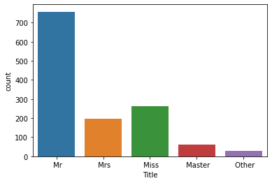
We can now drop the Name column.
data = data.drop("Name", axis=1)
2.2 Missing Values
Before starting the modelling part of this notebook, we take a quick look if there are any missing values in addition to those we already took care of.
data.isnull().sum()
PassengerId 0
Pclass 0
Sex 0
Embarked 2
train 0
age_cat 0
child 0
Fare_cat 0
family_size 0
Title 0
dtype: int64
There are two more missing values for Embarked. We proceed in a similar manner as we have done so with Age above. However, instead of using means we impute the missings with the most frequent value in the respective class.
data[data["Embarked"].isnull()]
| PassengerId | Pclass | Sex | Embarked | train | age_cat | child | Fare_cat | family_size | Title | |
|---|---|---|---|---|---|---|---|---|---|---|
| 61 | 62 | 1 | female | NaN | 1 | 4 | 0 | (78.02, 512.329] | 1 | Miss |
| 829 | 830 | 1 | female | NaN | 1 | 5 | 0 | (78.02, 512.329] | 1 | Mrs |
data["Embarked"].loc[data["Pclass"] == 1].value_counts()
S 177
C 141
Q 3
Name: Embarked, dtype: int64
The most frequent value of Embarked for passengers in the first class is Southhampton.
data.loc[data["Embarked"].isnull(), "Embarked"] = "S"
data.isnull().sum()
PassengerId 0
Pclass 0
Sex 0
Embarked 0
train 0
age_cat 0
child 0
Fare_cat 0
family_size 0
Title 0
dtype: int64
Our data looks good now, there are no more missing values.
2.3 Dummy variables
sklearn cannot handle categorical data, therefore we need to transform categorical features into dummy variables. If we have, for example, sex as a categorical feature (“male” or “female”) and we convert this feature into dummies we get one dummy for “male” (0: no, 1: yes) and one for “female”. Since both features are just linear combinations of each other (i.e. if we have the value for “male” we also have the value for “female”) this would cause perfect multicollinearity. We therefore drop the first category dummy per feature to prevent this.
data = pd.get_dummies(data, drop_first=True)
We can now split our data into the training and the test set. To do so, we have defined a binary variable “train” before concatenating both data frames. We can now use this indicator to split them again. After doing so, we drop the PassengerId since it does not add any information to our model.
X = data[data["train"]==1]
X = X.drop("PassengerId", axis=1)
test = data[data["train"]==0]
ID = test["PassengerId"] # saving the test set PassengerId for submission file
test = test.drop("PassengerId", axis=1)
X.shape, y.shape, test.shape
((891, 24), (891,), (418, 24))
3. Building the Predictive Models
We will try two different algorithms: a Random Forest Classifier and XGBoost Classifier. Since the Kaggle Leaderboard is based on the accuracy, i.e. the percentage of correctly classified samples, we will also use this metric to evaluate our models using k-fold cross-validation on a hold-out (test) set.
3.1 Random Forest
We are going to start with the Random Forest Classifier.
from sklearn.ensemble import RandomForestClassifier
from sklearn.metrics import accuracy_score
from sklearn.metrics import confusion_matrix
from sklearn import preprocessing
from sklearn.pipeline import Pipeline
from sklearn.model_selection import train_test_split
from sklearn.model_selection import GridSearchCV
from sklearn.model_selection import RandomizedSearchCV
At first. we have to split our data into a training set and a test set, on which the models can be evaluated on later.
X_train, X_test, y_train, y_test = train_test_split(X, y,
test_size=0.2,
random_state=123)
X_train.shape, X_test.shape, y_train.shape, y_test.shape
((712, 24), (179, 24), (712,), (179,))
Then we will create our pipeline object, define the functions that should be applied and define a grid with the parameters we want to tune and the range from which RandomizedSearchCV() should draw from.
steps_rf = [("scaler", preprocessing.StandardScaler()),
("rf_class", RandomForestClassifier(random_state=123))]
pipeline_rf = Pipeline(steps_rf)
# define our hyperparameter grid
n_estimators = list(np.arange(200, 2001, 200))
max_features = ["auto", "sqrt", "log2"]
max_depth = list(np.arange(10, 101, 10))
max_depth.append(None)
min_samples_split = [2, 5, 10]
min_samples_leaf = [1, 2, 4, 8]
bootstrap = [True, False]
param_dist = {"rf_class__n_estimators": n_estimators,
"rf_class__max_features": max_features,
"rf_class__max_depth": max_depth,
"rf_class__min_samples_split": min_samples_split,
"rf_class__min_samples_leaf": min_samples_leaf,
"rf_class__bootstrap": bootstrap}
We can now start to narrow down the range for our hyperparameters by using RandomizedSearchCV() to get a first hint of the ideally chosen hyperparameters for our data.
cv_random_rf = RandomizedSearchCV(pipeline_rf, param_dist, cv=5, n_iter=50,
n_jobs=16, verbose=1)
cv_random_rf.fit(X_train, y_train)
Fitting 5 folds for each of 50 candidates, totalling 250 fits
cv_random_rf.best_params_
{'rf_class__n_estimators': 2000,
'rf_class__min_samples_split': 10,
'rf_class__min_samples_leaf': 4,
'rf_class__max_features': 'auto',
'rf_class__max_depth': 70,
'rf_class__bootstrap': True}
Based on the chosen parameters from RandomizedSearchCV() we can now manually decrease the range of the hyperparameters to be tested and use GridSearchCV() as before to find the best parameters for our model.
n_estimators_2 = list(np.arange(1800, 2001, 50))
max_depth_2 = list(np.arange(50, 91, 10))
max_features_2 = ["auto"]
min_samples_split_2 = [5, 10, 15]
min_samples_leaf_2 = [2, 4, 6]
bootstrap_2 = [True]
param_grid = {"rf_class__n_estimators": n_estimators_2,
"rf_class__max_depth": max_depth_2,
"rf_class__max_features": max_features_2,
"rf_class__min_samples_split": min_samples_split_2,
"rf_class__min_samples_leaf": min_samples_leaf_2,
"rf_class__bootstrap": bootstrap_2}
cv_rf = GridSearchCV(pipeline_rf, param_grid, cv=5, n_jobs=16, verbose=1)
cv_rf.fit(X_train, y_train)
cv_rf.best_params_
{'rf_class__bootstrap': True,
'rf_class__max_depth': 50,
'rf_class__max_features': 'auto',
'rf_class__min_samples_leaf': 4,
'rf_class__min_samples_split': 10,
'rf_class__n_estimators': 1800}
We now can evaluate our model on our hold out test set using the accuracy metric.
y_pred_rf = cv_rf.predict(X_test)
round(accuracy_score(y_test, y_pred_rf), 4)
0.8547
We get an accuracy of 0.8547, which means that the model correctly classified 85.5% of the unseen test data, which is pretty good. We can also plot the confusion matrix.
cm_rf = pd.DataFrame(confusion_matrix(y_test, y_pred_rf))
sns.set(font_scale=1.4)
cm_rf = sns.heatmap(cm_rf, annot=True, fmt="g")
cm_rf.set(xlabel="True label", ylabel="Predicted Label")
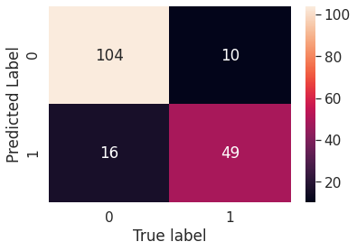
We can now run our model on the test set provided by Kaggle to see how well our model performs in the challenge compared to other models.
pred_rf = cv_rf.predict(test)
submiss_rf = {"PassengerId":ID, "Survived": pred_rf}
submission_rf = pd.DataFrame(submiss_rf)
3.2 XGBoost
After the random forest, we will now try the XGBoost algorithm with our data.
import xgboost as xgb
from xgboost.sklearn import XGBClassifier
steps_xgb = [("scaler", preprocessing.StandardScaler()),
("xgb", XGBClassifier(objective="binary:logistic",
eval_metric="auc", random_state=123))]
pipeline_xgb = Pipeline(steps_xgb)
As already done so with our Random Forest model, we first define a grid of hyperparameters and then tune these using RandomizedSearchCV and then GridSearchCV.
learning_rate = list(np.arange(0.01, 0.311, 0.01))
max_depth = list(np.arange(5,51,5))
min_child_weight = list(np.arange(0,11,2))
colsample_bytree = list(np.arange(0.5, 0.91, 0.05))
gamma = [0,1,2,3,4,5]
n_estimators = list(np.arange(100,1001,100))
param_dist_xgb = {"xgb__learning_rate": learning_rate,
"xgb__max_depth": max_depth,
"xgb__min_child_weight": min_child_weight,
"xgb__colsample_bytree": colsample_bytree,
"xgb__gamma": gamma,
"xgb__n_estimators": n_estimators}
cv_random_xgb = RandomizedSearchCV(pipeline_xgb, param_dist_xgb, cv=5,
n_iter=100, verbose=1)
cv_random_xgb.fit(X_train, y_train)
We can now again use the best hyperparameters found by RandomizedSearchCV to do a grid search on a smaller band of hyperparameters to find the best performing ones.
cv_random_xgb.best_params_
{'xgb__colsample_bytree': 0.8000000000000003,
'xgb__gamma': 4,
'xgb__learning_rate': 0.23,
'xgb__max_depth': 40,
'xgb__min_child_weight': 2,
'xgb__n_estimators': 200}
learning_rate_2 = list(np.arange(0.2, 0.26, 0.01))
max_depth_2 = list(np.arange(35,50,5))
min_child_weight_2 = list(np.arange(1,4,1))
colsample_bytree_2 = list(np.arange(0.7, 0.95, 0.05))
gamma_2 = [3,4,5]
n_estimators_2 = list(np.arange(100,301,100))
params_xgb = {"xgb__learning_rate": learning_rate_2,
"xgb__max_depth": max_depth_2,
"xgb__min_child_weight": min_child_weight_2,
"xgb__colsample_bytree": colsample_bytree_2,
"xgb__gamma": gamma_2,
"xgb__n_estimators": n_estimators_2}
cv_xgb = GridSearchCV(pipeline_xgb, params_xgb, cv=5)
cv_xgb.fit(X_train, y_train)
y_pred_xgb = cv_xgb.predict(X_test)
accuracy_score(y_test, y_pred_xgb)
0.8547
We get an accuracy of 0.8547 using the tuned XGBoost Classifier, which is exactly the same accuracy score as for the RandomForestRegressor. It would be interesting to see which of these models performs better on the unseen test dataset evaluated on Kaggle. We will do a short comparison at the end of this blogpost. We can again plot the confusion matrix to visualize the predictions and the true values of the hold out set.
cm_xgb_df = pd.DataFrame(confusion_matrix(y_test, y_pred_xgb))
sns.set(font_scale=1.4)
cm_xgb = sns.heatmap(cm_xgb_df, annot=True, fmt="g")
cm_xgb.set(xlabel="True label", ylabel="Predicted Label")
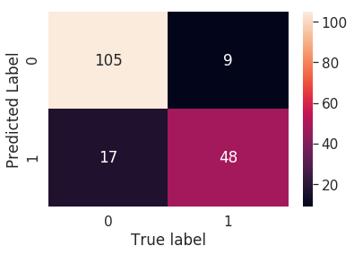
The last step now is to predict the labels on the test set, create a dataframe containing the passengers’ ID and if they survived or not and to download this, so it can be uploaded to Kaggle and evaluated there.
pred_xgb = cv_xgb.predict(test)
submiss_xgb = {"PassengerId":ID, "Survived": pred_xgb}
submission_xgb = pd.DataFrame(submiss_xgb)
3.3 Comparison of Kaggle results
Uploading both submission files, we get an accuracy score of 0.79425 using the RandomForestClassifier built at first. The XGBoost Classifier yields an accuracy score of 0.77511. Thus, the RandomForest clearly outperforms the XGBoost algorithm, which is surprising since XGBoost is known to be the best working algorithm for a very large field of applications for both regression and classification.
4. 2021 Update: Building a ML app using Streamlit
In another blogpost, I showcased how easy it is to deploy a ML model into a good-looking webapp built with the Streamlit package. To introduce a few more of Streamlit’s widgets and elements, I will provide another brief example here using the Titanic challenge.
4.1 Data Preparation
I used a reduced form of the dataset since the focus here is not on the modeling part. Therefore, our model uses only the following variables:
- age
- class
- child dummy
- family size
- embarked
- sex
train = pd.read_csv("train.csv") # read in data
# age
agemean1, agemean2, agemean3 = train["Age"].groupby([train["Pclass"]]).mean()
miss_age = np.isnan(train["Age"])
class_1 = train["Pclass"] == 1
class_2 = train["Pclass"] == 2
class_3 = train["Pclass"] == 3
train.loc[class_1, "Age"] = train.loc[class_1, "Age"].fillna(agemean1)
train.loc[class_2, "Age"] = train.loc[class_2, "Age"].fillna(agemean2)
train.loc[class_3, "Age"] = train.loc[class_3, "Age"].fillna(agemean3)
train.Age = train.Age.astype(int)
# convert class to object
train.Pclass = train.Pclass.astype(object)
# drop cabin and ticket
train = train.drop("Cabin", axis=1)
train = train.drop("Ticket", axis=1)
# child dummy
train["child"] = 0
train.loc[train["Age"] <= 16, "child"] = 1
# drop fare variable
train.drop("Fare", axis=1, inplace=True)
# create family size, i.e. oneself + children + spouse
train["family_size"] = train["SibSp"] + train["Parch"] + 1
train = train.drop(["SibSp", "Parch"], axis=1)
# drop name variable
train = train.drop("Name", axis=1)
# embarked
train.loc[train["Embarked"].isnull(), "Embarked"] = "S"
# drop passenger id
train = train.drop("PassengerId", axis=1)
# create dummy variables
train = pd.get_dummies(train, drop_first=False)
4.2 Building the Toy Model
from sklearn.ensemble import RandomForestClassifier
from sklearn.pipeline import Pipeline
from sklearn.model_selection import train_test_split
from sklearn.model_selection import GridSearchCV
from sklearn.model_selection import RandomizedSearchCV
import pickle
y = train.Survived
X = train.drop("Survived", axis=1)
# initialize the model
steps_rf = [("rf_class", RandomForestClassifier(random_state=123))]
pipeline_rf = Pipeline(steps_rf)
# define the hyperparameter grid for RandomSearch
n_estimators = list(np.arange(200, 2001, 200))
max_features = ["auto", "sqrt", "log2"]
max_depth = list(np.arange(10, 101, 10))
max_depth.append(None)
min_samples_split = [2, 5, 10]
min_samples_leaf = [1, 2, 4, 8]
bootstrap = [True, False]
param_dist = {"rf_class__n_estimators": n_estimators,
"rf_class__max_features": max_features,
"rf_class__max_depth": max_depth,
"rf_class__min_samples_split": min_samples_split,
"rf_class__min_samples_leaf": min_samples_leaf,
"rf_class__bootstrap": bootstrap}
# RandomSearchCV
rf = RandomizedSearchCV(pipeline_rf, param_dist, cv=5, n_iter=100,
n_jobs=14, verbose=1)
rf.fit(X, y)
# Save to file in the current working directory
pkl_filename = "rfSimple.pkl"
with open(pkl_filename, 'wb') as file:
pickle.dump(rf, file)
4.3 Building the Web App
We are going to use a range of Streamlit widgets for the users to provide their information on the above listed variables. These inputs will then be collected and put into a pandas DataFrame, which is going to be used as input data for the prediction model. Instead of printing the predicted class only, i.e. if a passenger would have survived or not based on the model, we will output the survival probability, which is simply the probability of belonging to the “Survived” class.
We use the following widgets: fields for number inputs for the age and family size variables, a selectbox for the passenger class, in which the user can choose Class 1, Class 2, or Class 3; and a selectbox with a binary choice for the sex variable.
Age = st.sidebar.number_input("How old are you?", 0, 100, 30)
family_size = st.sidebar.number_input("How many family members are aboard the " \
"ship (including yourself)?", 1, 20, 1)
pclassAux = st.sidebar.selectbox("In which passenger class are you traveling?",
(1,2,3))
sex = st.sidebar.selectbox("Are you male or female?", ("male", "female"), index=1)
To get the data into the required input format, we use this information to build the DataFrame and create the features we need from it, e.g. creating dummy variables. The whole script then looks as follows:
import streamlit as st
import numpy as np
import pandas as pd
import pickle
from sklearn.ensemble import RandomForestClassifier
# load the Random Forest Classifier
with open("./rfSimple.pkl", 'rb') as file:
rf = pickle.load(file)
# the model takes the following variables as input:
# Age - int
# child - int
# family_size - int
# Pclass_1 - uint8
# Pclass_2 - uint8
# Pclass_3 - uint8
# Sex_female - uint8
# Sex_male - uint8
# Embarked_C - uint8
# Embarked_Q - uint8
# Embarked_S - uint8
# create model input
Age = st.sidebar.number_input("How old are you?", 0, 100, 30)
child = int(Age <= 16)
family_size = st.sidebar.number_input("How many family members are aboard the " \
"ship (including yourself)?", 1, 20, 1)
pclassAux = st.sidebar.selectbox("In which passenger class are you traveling?",
(1,2,3))
Pclass_1=0
Pclass_2=0
Pclass_3=0
if pclassAux==1:
Pclass_1=1
if pclassAux==2:
Pclass_2=1
if pclassAux==3:
Pclass_3=1
sex = st.sidebar.selectbox("Are you male or female?", ("male", "female"), index=1)
Sex_female = 0
Sex_male = 0
if sex=="female":
Sex_female=1
else:
Sex_male=1
embarked = st.sidebar.selectbox("Which is your port of Embarkation?",
("Cherbourg", "Queenstown", "Southhampton"))
Embarked_C = 0
Embarked_Q = 0
Embarked_S = 0
# create input DataFrame
inputDF = pd.DataFrame({"Age": Age,
"child": child,
"family_size": family_size,
"Pclass_1": Pclass_1,
"Pclass_2": Pclass_2,
"Pclass_3": Pclass_3,
"Sex_female": Sex_female,
"Sex_male": Sex_male,
"Embarked_C": Embarked_C,
"Embarked_Q": Embarked_Q,
"Embarked_S": Embarked_S},
index=[0])
SurvivalProba = rf.predict_proba(inputDF)[0,1]
survPerc = round(SurvivalProba*100, 1)
# display survival probability
st.image("./static/titanic.jpg", use_column_width=True)
st.write("Your Survival Probability based on the information " \
"provided is: {}%.".format(survPerc))
Note that we put all of the input variables into a collapsible sidebar (st.sidebar.). Again, because of its simplicity, I deployed the app using Streamlit Sharing again. It can be accessed here or by clicking on the badge below.